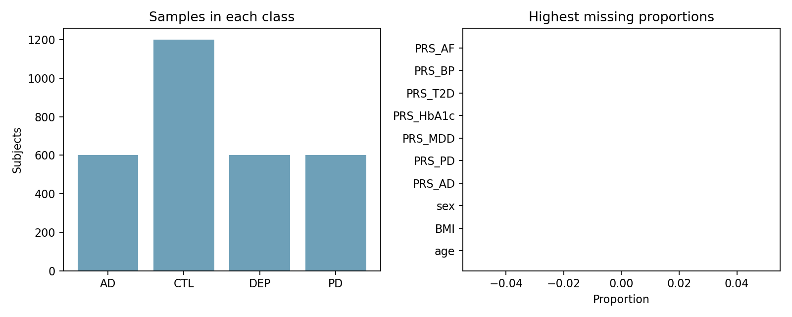
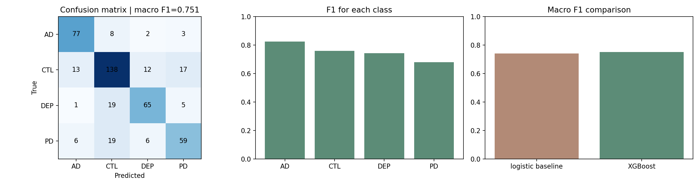
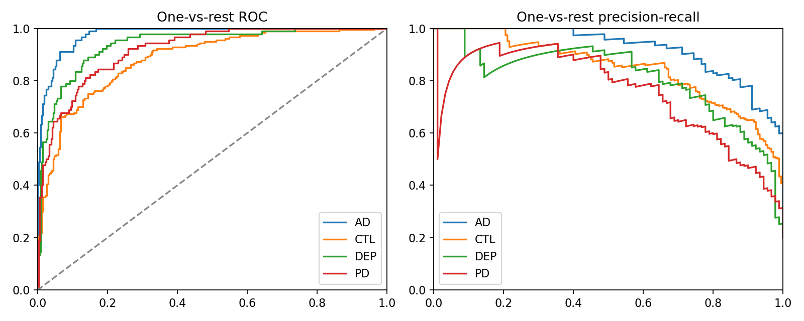
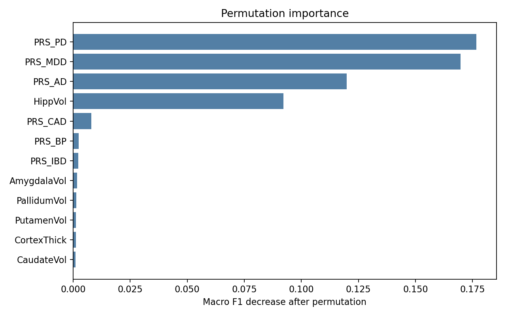

KYDW 本科生科研入门体验项目
实践项目参考答案 04：XGBoost 脑疾病表格分类
使用课程提供的 Data.csv，将 CTL、AD、PD 和 DEP 作为四分类目标，完成预处理、XGBoost 训练和变量贡献分析。
参考答案仅做参考，并非代表唯一正确结果，效果以运行结果为准，具体代码形式可自行调整。打开公开 Kaggle Notebook 后，先复制到自己的账户，再修改题目中标记的区域并运行。
固定目标和输入
目标列固定为 label，ID 只用于识别受试者。
df = pd.read_csv(DATA_PATH)
encoder = LabelEncoder()
y = encoder.fit_transform(df['label'].astype(str))
X = df.drop(columns=['ID', 'label'])
print(dict(zip(encoder.classes_, np.bincount(y))))训练集拟合预处理
数值列和类别列分别处理，预处理规则只从训练集学习。
numeric_cols = list(X.select_dtypes(include=np.number).columns)
categorical_cols = [c for c in X.columns if c not in numeric_cols]
pre = ColumnTransformer([
('num', Pipeline([('imputer', SimpleImputer(strategy='median'))]), numeric_cols),
('cat', Pipeline([('imputer', SimpleImputer(strategy='most_frequent')), ('onehot', OneHotEncoder(handle_unknown='ignore'))]), categorical_cols),
])XGBoost 参数
轻量设置用于完成四分类体验。
clf = XGBClassifier(
n_estimators=180, max_depth=3, learning_rate=.05,
objective='multi:softprob', num_class=4,
subsample=.8, colsample_bytree=.8,
eval_metric='mlogloss', random_state=SEED,
)
model = Pipeline([('pre', pre), ('clf', clf)])四分类评价
先计算逻辑回归基线，再使用混淆矩阵、分类报告和宏平均 F1 查看 XGBoost 的结果。
baseline.fit(X_train, y_train)
baseline_f1 = f1_score(y_test, baseline.predict(X_test), average='macro')
model.fit(X_train, y_train)
test_prob = model.predict_proba(X_test)
test_pred = test_prob.argmax(axis=1)
macro_f1 = f1_score(y_test, test_pred, average='macro')
cm = confusion_matrix(y_test, test_pred)
report = classification_report(y_test, test_pred, target_names=encoder.classes_, output_dict=True)置换重要性
逐列打乱输入，观察宏平均 F1 的下降。
pi = permutation_importance(
model, X_test, y_test, n_repeats=5,
random_state=SEED, scoring='f1_macro'
)
order = np.argsort(pi.importances_mean)[-12:]概率曲线与高置信度错误
ROC/PR 是概率排序的补充，高置信度错误用于查看模型非常确定但仍判断错误的样本。
confidence = test_prob.max(axis=1)
wrong = np.where(test_pred != y_test)[0]
high_confidence_wrong = wrong[np.argsort(confidence[wrong])[::-1]][:10]
print(X_test.iloc[high_confidence_wrong].assign(
true=y_encoder.inverse_transform(y_test[high_confidence_wrong]),
predicted=y_encoder.inverse_transform(test_pred[high_confidence_wrong]),
confidence=confidence[high_confidence_wrong],
))本次参考结果
逻辑回归基线宏平均 F1 为 0.739；XGBoost 准确率为 0.753、宏平均 F1 为 0.751。这些数值描述课程数据上的预测结果，不表示变量具有疾病因果作用。




结果文件
完成参考版运行后，按下列文件核对数据、图像和指标。
task4_data_summary.pngtask4_confusion.pngtask4_roc_pr.pngtask4_importance.pngtask4_result.json